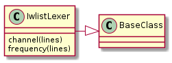
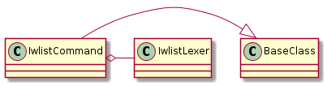

A module to hold lexers for the iwlist command. I don’t use it often so it won’t have a lot to it initially.
This is modeled on the IwconfigLexer but that was originally created to continuously poll information from a device and so bundles the command, connection and lexer into one class (it’s much too big, it should get un-bundled at some point). In this case I’m creating something to search the output of lines given to it (hopefully the output of the iwlist command) and leave it up to the user to run the command on the connection and get the output to give to the IwlistLexer.

IwlistLexer([interface, not_available]) |
IwlistLexer constructor |
IwlistEnum |

IwlistCommand(connection, interface) |
A bundler of connection and IwlistLexer |
TestIwlist.test_constructor() |
Does the constructor take the expected arguments? |
TestIwlist.test_frequency_expression() |
Does the expression math the current frequency? |
TestIwlist.test_frequency() |
Does the lexer return the frequency string? |
TestIwlist.test_channel_expression() |
Does the expression match the channel string? |
TestIwlist.test_channel() |
Does the lexer return the channel? |